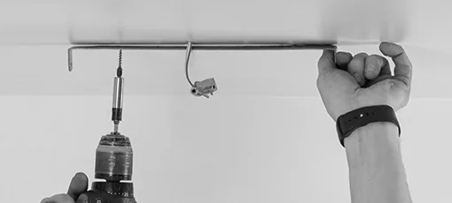
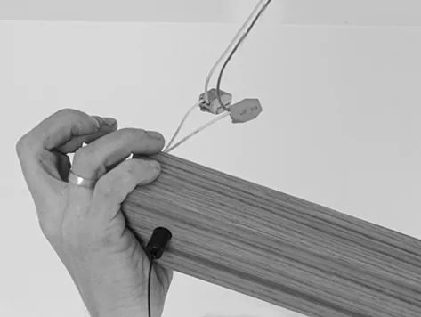
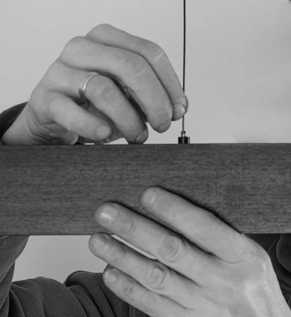

Инструкция по установке
1. Определите место установки светильника, учитывая габариты корпуса светильника и его основания
2. Смонтируйте П-образную планку-держатель к потолку на расстоянии 1-2 см от провода 220В, к которому будет производиться подключение.

1. Разместите светильник и его комплектующие на столе, либо любой устойчивой поверхности под зоной монтажа. (Важно: для монтажа не требуется разбирать корпус, укорачивать тросы, снимать клеммы, либо производить любые другие действия с комплектом светильника)
2. Не сворачивая тросы, поднять коробку основание светильника к проводу 220в и подключить к сети через клеммы по отдельности к каждой из двух выведенных из блока питания, строго соблюдая правила техники безопасности при работе с электричеством.
2. Не сворачивая тросы, поднять коробку основание светильника к проводу 220в и подключить к сети через клеммы по отдельности к каждой из двух выведенных из блока питания, строго соблюдая правила техники безопасности при работе с электричеством.

1. Наденьте коробку-основание на п-образную планку, совместив оси отверстий монтажных болтов и закрутите их.
2. Регулировка светильника:
1. Чтобы поднять светильник: плавно проталкивайте тросы внутрь корпуса по очереди.
2. Чтобы опустить светильник:
а. Придержите светильник рукой.
б. Нажмите кнопку цангового зажима на креплении.
с. Плавно отпустите светильник на нужной высоте.
2. Регулировка светильника:
1. Чтобы поднять светильник: плавно проталкивайте тросы внутрь корпуса по очереди.
2. Чтобы опустить светильник:
а. Придержите светильник рукой.
б. Нажмите кнопку цангового зажима на креплении.
с. Плавно отпустите светильник на нужной высоте.

Подключение светильника
к Алисе
Подключение контроллера MiBoxer SW5 к Алисе осуществляется через приложение «MiBoxer Smart» или «Tuya Smart», которые затем привязываются к Яндексу. Сначала настройте SW5 в родном приложении, переведя его в режим сопряжения (удержание кнопки), затем в приложении «Дом с Алисой» добавьте MiBoxer/Tuya и авторизуйтесь.
Пошаговая инструкция:
Настройка SW5 в приложении MiBoxer Smart:
- Установите приложение MiBoxer Smart или Tuya Smart на смартфон.
- Подключите SW5 к сети и включите.
- Зажмите кнопку на корпусе SW5 на 5 секунд, пока индикатор не начнет быстро мигать (режим сопряжения).
- В приложении нажмите «Добавить устройство» и следуйте инструкциям для подключения к 2.4 ГГц Wi-Fi.
- Подключение к Яндексу (Алисе):
- Откройте приложение «Дом с Алисой».
- Нажмите «+» (Добавить) -> «Устройство умного дома».
- Найдите в списке MiBoxer Smart или Tuya Smart.
- Нажмите «Привязать к Яндексу» и введите логин/пароль от аккаунта, который использовали в п.1.
- Нажмите «Обновить список устройств».